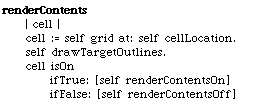
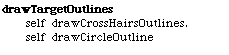
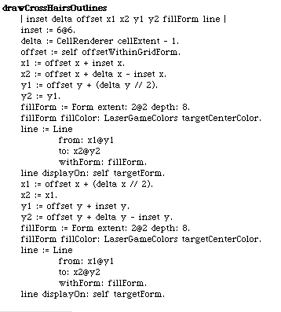
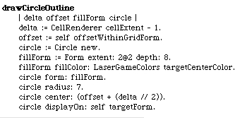
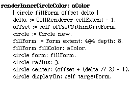

Time to draw the target cell contents. This one's a little more work than the mirror. It has several visual components. First, there's a cross-hairs. Then there's a circle (like a target) in the center. And then the circle is filled-in with either of 2 colors depending on whether the cell is On or Off. These new methods are on the TargetCellRenderer class.
We can draw the static portion of the contents and then fill-in the circle. Here's the #renderContents method for our TargetCellRenderer.
Drawing the target outlines is done in two steps.
Drawing the crosshairs is a lot like drawing the mirrors. Note that we have defined some new color methods that need to get filled in before we run.
Drawing circles are a little different. We need to specify the radius and locate the circle by its center.
Fill-in of the circle can be done by a common method where the only change would be the fill-in color. Here's how we'll call the method.
And now the circle fill-in.
We need to define new class methods on LaserGameColors to handle the new color requests.